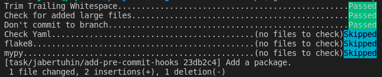
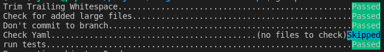

প্রি-কমিট হুকের সাথে পরিচিতি Vladimir Iglovikov এর ব্লগ Nine simple steps for better-looking python code পোস্টের মাধ্যমে। আমার কাছে খুবই ইন্টারেস্টিং কনসেপ্ট মনে হয়েছে, তাই এই ব্যাপারে একটা ব্লগ লিখা। পাইথন প্রজেক্টের ক্ষেত্রে কিভাবে আমরা pre-commit hook ব্যবহার করতে পারি, তা নিয়েই এই ব্লগ পোস্ট।
কেন pre-commit hook প্রয়োজন
আমরা যখন একটা প্রজেক্টে কাজ করি- তখন সেখানে কয়েকজন ডেভলপার থাকে, একজন অন্যজনের কোড রিভিউ করে। পুল-রিকুয়েস্ট রিভিউ করার সময় আমাদের মূল ফোকাস যেন কোডের লজিক, ডিজাইন ইত্যাদি গুরুত্ব পূর্ণ বিষয়গুলোতে বেশি থাকে। আমার কলিগের পুল-রিকুয়েস্ট যেন একটা এক্সট্রা স্পেস কিংবা এক্সট্রা নিউ লাইনের জন্য ঝুলে না থাকে। ল্যাঙ্গুয়েজ স্পেসিফিক বেস্ট প্র্যাকটিস যেন আমরা আরেকটা টুলসের মাধ্যমে নিশ্চিত করতে পারি।
তাছাড়া ডেভলপাররাও বিভিন্ন সময় ভুল করে- সেই ভুল হতে পারে ডেভলপমেন্ট/মাস্টার ব্রাঞ্চে ভুল করে কমিট করা, কোন একটা লার্জ ফাইল গিট ইগ্নোর না করায় তা কমিট হয়ে যাওয়া, গিট পুশ করার আগে ইউনিট টেস্টগুলো সব পাস হচ্ছে নাকি তা চেক না করেই পুল-রিকুয়েস্ট ক্রিয়েট করে ফেলা।
এইসব বিভিন্ন ধরনের চেকিং আমরা চাইলে আমাদের কমিট করার আগে করতে পারি। সেটার জন্যই আমরা আজকে একটা পাইথন প্রজেক্টে pre-commit hook কিভাবে ব্যবহার করতে হয় তা দেখবো।
pre-commit প্যাকেজ ইন্সটলেশন
আমাদের প্রজেক্টে প্রথমে pre-commit পাইথন প্যাকেজ ইন্সটল করতে হবে, এবং এই প্যাকেজ ব্যবহার করে আমরা pre-commit ও pre-push - git hooks ইন্সটল করবো।
এই pre-commit প্যাকেজকে আমরা requirements.dev.text তেও এড করে দিবো, কারণ এই প্যাকেজটা শুধু ডেভলপমেন্টের সময় লাগবে।
.pre-commit-config.yaml -এর মাধ্যমে কনফিগারেশন
এখন আসি, কিভাবে আমাদের pre-commit hook কে কনফিগার করবো। .pre-commit-config.yaml ফাইলে আমরা আমাদের প্রয়োজন অনুযায়ী কনফিগারশন করবো, আর সেটিকে প্রজেক্ট রুটে রাখবো। নিম্নে আমার একটা টয় প্রজেক্টের .pre-commit-config.yaml ফাইল দেয়া হলো -
repos:
- repo: https://github.com/pre-commit/pre-commit-hooks
rev: v3.4.0
hooks:
- id: trailing-whitespace
- id: check-added-large-files
- id: no-commit-to-branch
- id: check-yaml
- repo: https://gitlab.com/pycqa/flake8
rev: 3.8.4
hooks:
- id: flake8
stages: [commit]
- repo: https://github.com/pre-commit/mirrors-mypy
rev: v0.812
hooks:
- id: mypy
additional_dependencies: [tokenize-rt==3.2.0]
stages: [commit]
- repo: local
hooks:
- id: tests
name: run tests
entry: pytest -v
language: system
always_run: true
types: [python]
stages: [push]pre-commit-hooks
প্রথম যে রিপোটা আমরা ব্যবহার করছি তা হলো pre-commit-hooks, এ আমাদেরকে বেশকিছু চেকিং এবং ফিক্সিং আউট-অফ-দা-বক্স সাপোর্ট দেয়। যেমন, আমাদের ফাইলে খেয়াল করলে hooks এর নিচে দেখতে পাচ্ছি প্রথম id হলো trailing-whitespace , যেটা আমার কোডের প্রতি লাইনের শেষের এক্সট্রা স্পেসগুলি রিমুভ করে দিবে এবং সেক্ষেত্রে আপনার কমিট ফেইল করবে। আমাদেরকে তখন নতুন করে স্পেসিফিক ফাইলকে স্টেজ করে কমিট করতে হবে, কারণ প্রয়োজনীয় চেঞ্জ আমাকে করে দিয়েছি এই hook । এরপরের আইডি হলো- check-added-large-files, এর ডিফল্ট ভ্যালু ৫০০ KB দেয়া। এর চেয়ে বড় ফাইল আপনি কমিট করতে চাইলে, সেটা এই চেকিং এ ধরা পড়বে এবং আপনি কমিট করতে পারবেন না। no-commit-to-branch এটা দিয়ে আমি নিশ্চিত করতে পারবো কেউ যেন সরাসরি মাস্টার ব্রাঞ্চে কমিট করতে না পারে(আর্গুমেন্ট দিয়ে আমরা অন্য ব্রাঞ্চও কনফিগার করতে পারবো।), check-yaml আইডি দিয়ে আমরা yaml ফাইলের ফরম্যাটিং চেক করতে পারবো। আরও জানার জন্য গিটহাব রিপো দেখুন - pre-commit-hooks
flake8
এরপরে পাইথনে স্টাইল গাইড ফলো করার জন্য আমরা flake8 রিপো ব্যবহার করবো, যে পাইথন ফাইলগুলো আমি কমিট করতে চাচ্ছি সেগুলো সকল স্টাইলিং গাইড মেইনটেইন করছে কি-না, না করলে কোন ফাইলের কোথায় ইস্যু সেটা বলে দিবে। আর এখানে আমরা stages এ বলে দিচ্ছি - commit, যেন শুধু git commit এর সময়ই এই চেকিং টা হয়। flake8 সম্পর্কে জানার জন্য তাদের গিটহাব রিপো দেখুন - flake8 - Github
mypy
তৃতীয়ত আসছে mypy, পাইথনের টাইপ চেকিং এর জন্য। এই প্যাকেজের নিজস্ব কোন ডিপেন্ডেন্সি থাকলে সেটাও আমরা উল্লেখ করে দিতে পারি additional_dependencies এর মাধ্যমে। mypy সম্পর্কে জানার জন্য তাদের ডকুমেন্টেশন পেজ দেখুন - Mypy Introduction
tests
সর্বশেষে আসছে, ইউনিট টেস্ট রান করা। আমি আমার ইউনিট টেস্ট রান করতে চাই git push করার সময়ে, সে জন্য এখানে আমার stages এ শুধু push বলা আছে। আর pytest এর মাধ্যমে আমার টেস্ট রান করতে বলছি entry তে। always_run ব্যবহার করে আমরা বলে দিচ্ছি যেন সবসময় push করার আগে টেস্ট ফাইলগুলো রান করে।
উদাহরণ
আমি আমার প্রজেক্টের requirements.txt থেকে একটা প্যাকেজ রিমুভ করে দিয়ে, একটা কমিট করি। যেহেতু এটা পাইথন ফাইল না, পাইথন স্পেসিফিক হুকগুলো এখানে রান করে নি। 
পরবর্তীতে আমি এই চেঞ্জ যখন push করি তখন কমিট স্পেসিফিক চেকিং গুলো হয় নি, আর push এর সময় টেস্ট রান করতে বলেছিলাম সেই টেস্ট রান হয়েছে। 
CI পাইপলাইনে প্রি-কমিট হুক চেকিং
Bitbucket Pipeline Example
Bitbucket পাইপলাইনে মাল্টিপল স্টেপ প্যারালালি রান করা যায়। এর ফলে CI রান করার ওয়েটিং টাইমটা কমিয়ে ফেলা যায়।
image: python:3.8
definitions:
steps:
- step: &coverage
name: Running Test
size: 2x
caches:
- pip
script:
- pip install -r requirements.dev.txt
- pytest
- step: &pre_commit
name: Pre-Commit Hook Checking
caches:
- pip
script:
- pip install pre-commit==2.17.0
- pre-commit run --all-files
pipelines:
branches:
development:
- parallel:
- step: *coverage
- step: *pre_commit
pull-requests:
'**':
- parallel:
- step: *coverage
- step: *pre_commitGithub Action Pipeline Example:
name: Continuous Integration
on:
push:
branches:
- development
pull_request:
branches:
- "**"
jobs:
build:
runs-on: ubuntu-latest
steps:
- uses: actions/checkout@v2
- name: Set up Python
uses: actions/setup-python@v2
with:
python-version: '3.8'
- name: Install dependencies
run: |
python -m pip install --upgrade pip
make dev_setup
- name: Test with pytest
run: |
make test
- name: Pre-Commit Hook Checking
run: |
pre-commit run --all-filesResources
UPDATE Log
[27th January, 2022] Add CI pipeline example for Bitbucket and Github Action.